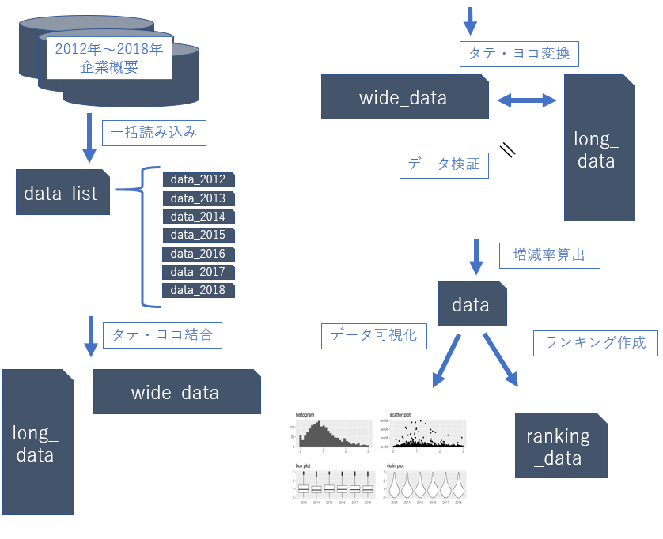
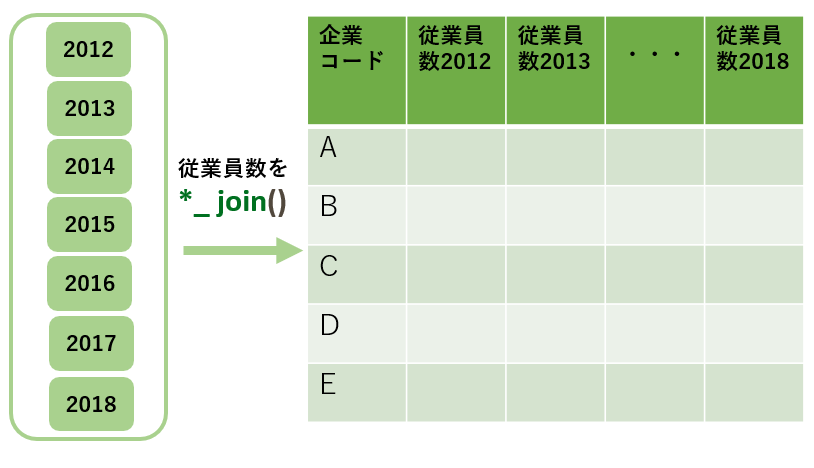
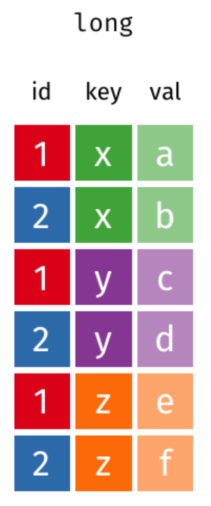
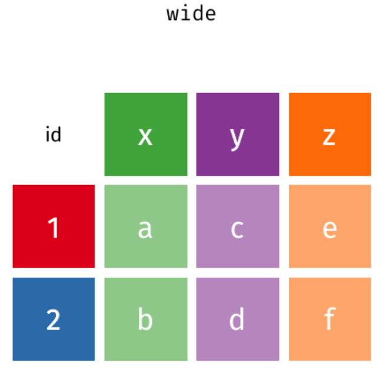
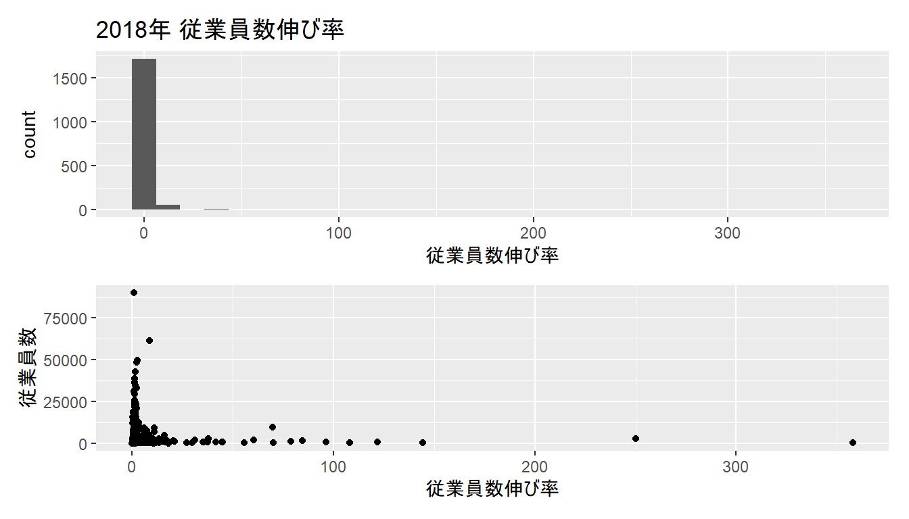
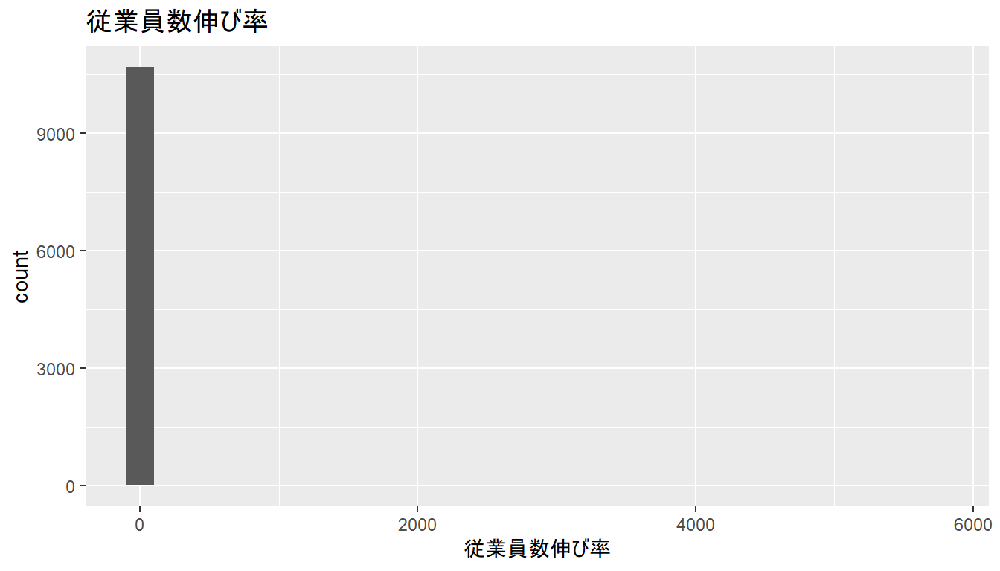

5 中級編後半
作業の確認
中級の作業イメージ
左半分を終えたので、右半分を後半で進めていきます。

目次（中級後半）
- 前半の作業のおさらい
- タテ持ちデータ・ヨコ持ちデータ
- データの検証
- 前年度比の算出
- 演習
- データの可視化
- ランキングの作成
5.1 前半の作業のおさらい
5.1.1 複数データの読み込み
listとfor文を使って複数データを一括で読み込みました。

5.1.2 タテ結合とヨコ結合
2通りの方法で複数データを結合し、long_dataとwide_dataを作成しました。
bind_rowsでタテに結合 （long_data）

left_joinでヨコに結合 （wide_data）

5.2 タテ持ちデータ・ヨコ持ちデータ
- データ保持形式を理解し、タテヨコ変換を習得します
- pivot_longer
- pivot_wider
5.2.1 タテ持ち・ヨコ持ちとは
- タテ持ちデータとヨコ持ちデータの違いは、データを保持する形式の違いだけです
- 中級前半で作成したlong_dataがタテ持ちデータ、wide_dataがヨコ持ちデータとなっています
- スライド上では見やすさのため、従業員数カラムに着目した小規模データで表示しています
| long_data | ||
|---|---|---|
| 企業コード | year | 従業員数 |
| B02111302 | 2012 | 1254 |
| B02111302 | 2013 | 768 |
| B02111302 | 2014 | 1242 |
| B02117802 | 2012 | 82 |
| B02117802 | 2013 | 376 |
| B02117802 | 2014 | 374 |
| wide_data | |||
|---|---|---|---|
| 企業コード | 従業員数_2012 | 従業員数_2013 | 従業員数_2014 |
| B02111302 | 1254 | 768 | 1242 |
| B02117802 | 82 | 376 | 374 |
5.2.2 タテ持ち・ヨコ持ちの特徴
- タテ：1行から1つの情報を読み取ります
- ヨコ：行と列の交差点から1つの情報を読み取ります
| 特徴項目 | タテ | ヨコ |
|---|---|---|
| 人間が理解しやすい | × | ○ |
| コンピュータが理解しやすい | ○ | × |
| excelなどで見慣れた形式 | × | ○ |
| 新しいデータの追加がしやすい | ○ | × |
| 可視化・機械学習に適している | ○ | × |
| long_data | ||
|---|---|---|
| 企業コード | year | 従業員数 |
| B02111302 | 2012 | 1254 |
| B02111302 | 2013 | 768 |
| B02111302 | 2014 | 1242 |
| B02117802 | 2012 | 82 |
| B02117802 | 2013 | 376 |
| B02117802 | 2014 | 374 |
| wide_data | |||
|---|---|---|---|
| 企業コード | 従業員数_2012 | 従業員数_2013 | 従業員数_2014 |
| B02111302 | 1254 | 768 | 1242 |
| B02117802 | 82 | 376 | 374 |
5.2.3 タテ⇔ヨコ変換
- 以下2点のような理由から、データを自在にタテヨコ変換できるようになる必要があります
- タテ持ちデータで可視化・機械学習をすることが多い
- ヨコ持ちデータでのファイル出力を求められる場合がある
- タテとヨコの変換には、pivot_longerとpivot_widerという関数を使用します
- 先にタテヨコ変換のイメージをつかんでもらった後に、上記関数を用いたタテヨコ変換の実装をします
5.2.4 タテヨコ変換イメージ画像
次頁にgifのモーション画像があります。


5.2.5 タテヨコ変換イメージgif

- ヨコ→タテは、選択したカラム名でkeyカラムを作り、選択したカラム名にあったデータでvalueカラムを作る操作です
- タテ→ヨコは、選択したkeyカラムのデータをカラム化し、選択したvalueカラムのデータを行と列に対応した位置へ移動します
5.2.6 タテヨコ変換実装
詳細は次頁で解説します
| long_data | ||
|---|---|---|
| 企業コード | year | 従業員数 |
| B02111302 | 2012 | 1254 |
| B02111302 | 2013 | 768 |
| B02111302 | 2014 | 1242 |
| B02117802 | 2012 | 82 |
| B02117802 | 2013 | 376 |
| B02117802 | 2014 | 374 |
| wide_data | |||
|---|---|---|---|
| 企業コード | 従業員数_2012 | 従業員数_2013 | 従業員数_2014 |
| B02111302 | 1254 | 768 | 1242 |
| B02117802 | 82 | 376 | 374 |
5.2.7 pivot_longerでヨコ → タテ変換
| 引数 | 意味 |
|---|---|
| cols | keyカラムに格納するカラム名を、select関数と同様にして選択 |
| names_to | keyカラムのカラム名を指定 |
| names_prefix | colsで選択したカラム名から消去したい接頭辞を指定 |
| values_to | valueカラムのカラム名を指定 |
5.2.8 pivot_widerでタテ → ヨコ変換
| 引数 | 意味 |
|---|---|
| names_from | カラム化したいデータが入っているカラム名(keyカラム)を指定 |
| names_prefix | 付与する接頭辞を指定 |
| values_from | 行と列で対応させたいデータのカラム名を指定 |
long_data %>% select("企業コード", "year", "従業員数") %>%
pivot_wider(names_from="year",
names_prefix = "従業員数_",
values_from="従業員数")| wide_data | |||
|---|---|---|---|
| 企業コード | 従業員数_2012 | 従業員数_2013 | 従業員数_2014 |
| B02111302 | 1254 | 768 | 1242 |
| B02117802 | 82 | 376 | 374 |
5.3 研磨データの比較検証
- データの比較検証方法を習得します
5.3.1 比較検証をする理由
- 世の中に「研磨データの正解データ」はありません
- そのため研磨データの正確性を担保するために、2人以上で研磨データを作成して比較検証をおこなう（ダブルチェック）ことがあります
5.3.2 比較検証をする方法
- 比較検証の練習として、long_dataと、wide_dataをタテ持ち変換したデータの比較検証を行います
- 前節のとおり、タテ持ちとヨコ持ちの違いはデータを保持する形式の違いだけなので、データ保持形式を揃えたらデータが一致するはずだからです
- なおデータ比較の際には、以下の項目を事前にそろえておく必要があります
- カラムの名前・順番・型、レコードの順番
- ここではdiffdfパッケージを用いてデータの比較検証をおこなうので、diffdfのインストールと読み込みをします
5.3.3 検証データの作成：long_data
- まずはlong_dataから検証データを作成します
- 練習なので、従業員数カラムに注目して検証します
- long_dataからlong_emp_lを、以下の仕様で作成します
- 企業コード, year, 従業員数の3つのカラムを選択
- 企業コードとyearでソート
long_emp_l
# A tibble: 14,972 x 3
企業コード year 従業員数
<chr> <chr> <dbl>
1 B02111302 2012 1254
2 B02111302 2013 768
3 B02111302 2014 1242
4 B02111302 2015 1409
5 B02111302 2016 728
6 B02111302 2017 1401
7 B02111302 2018 1096
8 B02117802 2012 82
9 B02117802 2013 376
10 B02117802 2014 374
# ... with 14,962 more rows5.3.4 検証データの作成：wide_data
- 次にwide_dataをタテ変換してlong_emp_wを作成します
- こちらもlong_emp_lと同様の仕様で作成します
long_emp_w
# A tibble: 15,232 x 3
企業コード year 従業員数
<chr> <chr> <dbl>
1 B02111302 2012 1254
2 B02111302 2013 768
3 B02111302 2014 1242
4 B02111302 2015 1409
5 B02111302 2016 728
6 B02111302 2017 1401
7 B02111302 2018 1096
8 B02117802 2012 82
9 B02117802 2013 376
10 B02117802 2014 374
# ... with 15,222 more rows5.3.5 diffdfで一致確認
- long_dataと、wide_dataをタテ持ちデータにしたものを比較検証すると、一致しなかったデータに関するメッセージがたくさん出てきました
- なぜ一致しないのか確認していきましょう
Differences found between the objects!
A summary is given below.
There are rows in COMPARE that are not in BASE !!
First 10 of 260 rows are shown in table below
===============
..ROWNUMBER..
---------------
14973
14974
14975
14976
14977
14978
14979
14980
14981
14982
---------------
Not all Values Compared Equal
All rows are shown in table below
=============================
Variable No of Differences
-----------------------------
企業コード 14335
year 12912
従業員数 14911
-----------------------------
First 10 of 14335 rows are shown in table below
===============================================
VARIABLE ..ROWNUMBER.. BASE COMPARE
-----------------------------------------------
企業コード 15 B02119859 B02122250
企業コード 22 B02122250 B02122602
企業コード 29 B02122602 B02124175
企業コード 34 B02125529 B02124175
企業コード 35 B02125529 B02124175
企業コード 41 B02128716 B02125529
企業コード 42 B02128716 B02125529
企業コード 48 B02129789 B02128716
企業コード 49 B02129789 B02128716
企業コード 55 B02153443 B02129789
-----------------------------------------------
First 10 of 12912 rows are shown in table below
========================================
VARIABLE ..ROWNUMBER.. BASE COMPARE
----------------------------------------
year 15 2018 2012
year 16 2012 2013
year 17 2013 2014
year 18 2014 2015
year 19 2015 2016
year 20 2016 2017
year 21 2017 2018
year 22 2018 2012
year 23 2012 2013
year 24 2013 2014
----------------------------------------
First 10 of 14911 rows are shown in table below
=========================================
VARIABLE ..ROWNUMBER.. BASE COMPARE
-----------------------------------------
従業員数 15 205 790
従業員数 16 790 690
従業員数 17 690 1074
従業員数 18 1074 1123
従業員数 19 1123 297
従業員数 20 297 523
従業員数 21 523 695
従業員数 22 695 23216
従業員数 23 23216 4217
従業員数 24 4217 6092
-----------------------------------------5.3.6 不一致の原因
- レコード数が異なることやレコードがズレていることから、タテとヨコのデータの結合方法の違いが不一致の原因と考えられます
- たとえば企業コードが“B02119859”のデータは、long_dataにはありますがwide_dataにはありません
5.3.7 不一致の理由
- long_dataは全データをタテ結合したので、「2012年の企業コード以外」の「企業コード」も存在します
- wide_dataは2012年の企業コードをキーにしてleft_joinでヨコ結合したので、「2012年のデータにある企業コード」のみが存在します
データを一致させるために、「2012年から2018年までの7年ぶんのレコードがすべて存在するデータ」という条件で絞って再度検証してみましょう
5.3.8 条件を揃える準備
- 7年ぶんのレコードが揃っている企業コードを抽出します
# A tibble: 1,788 x 2
企業コード n
<chr> <int>
1 B02111302 7
2 B02117802 7
3 B02122250 7
4 B02122602 7
5 B02125529 7
6 B02128716 7
7 B02129789 7
8 B02153443 7
9 B02505784 7
10 B02514384 7
# ... with 1,778 more rows5.3.9 再度検証
- 7年ぶん揃っている企業コードのcode_7yearに対して、“企業コード”をキーにlong_emp_lとlong_emp_wをそれぞれleft_joinすることで、条件を満たすデータを抽出します
- 条件を合わせたデータで再度検証したところ、データが一致したことが確認できました
long_emp_l <- code_7year %>% left_join(long_emp_l, by = "企業コード")
long_emp_w <- code_7year %>% left_join(long_emp_w, by = "企業コード")
diffdf(long_emp_l, long_emp_w)No issues were found!5.3.10 参考：グループ解除
- group_byを使ってグループ化されたデータは、ungroupするまでグループ化が継続されます
# A tibble: 1,788 x 2
# Groups: 企業コード [1,788]
企業コード n
<chr> <int>
1 B02111302 7
2 B02117802 7
3 B02122250 7
4 B02122602 7
5 B02125529 7
6 B02128716 7
7 B02129789 7
8 B02153443 7
9 B02505784 7
10 B02514384 7
# ... with 1,778 more rowscode_7year_ug <-
long_emp_l %>%
group_by(企業コード) %>%
count() %>%
filter(n == 7) %>%
ungroup()
code_7year_ug# A tibble: 1,788 x 2
企業コード n
<chr> <int>
1 B02111302 7
2 B02117802 7
3 B02122250 7
4 B02122602 7
5 B02125529 7
6 B02128716 7
7 B02129789 7
8 B02153443 7
9 B02505784 7
10 B02514384 7
# ... with 1,778 more rows- group化されたデータに対してjoinをしても、group化は勝手に解除されることはないので注意しましょう
- group化が残っていると、意図せぬに挙動になることがままあります
# A tibble: 12,516 x 4
# Groups: 企業コード [1,788]
企業コード n year 従業員数
<chr> <int> <chr> <dbl>
1 B02111302 7 2012 1254
2 B02111302 7 2013 768
3 B02111302 7 2014 1242
4 B02111302 7 2015 1409
5 B02111302 7 2016 728
6 B02111302 7 2017 1401
7 B02111302 7 2018 1096
8 B02117802 7 2012 82
9 B02117802 7 2013 376
10 B02117802 7 2014 374
# ... with 12,506 more rows# A tibble: 12,516 x 4
企業コード n year 従業員数
<chr> <int> <chr> <dbl>
1 B02111302 7 2012 1254
2 B02111302 7 2013 768
3 B02111302 7 2014 1242
4 B02111302 7 2015 1409
5 B02111302 7 2016 728
6 B02111302 7 2017 1401
7 B02111302 7 2018 1096
8 B02117802 7 2012 82
9 B02117802 7 2013 376
10 B02117802 7 2014 374
# ... with 12,506 more rows5.4 前年度比の算出
- 整った複数年の結合データで指標を算出します
5.4.1 結果の確認
- 右のように、long_empに従業員数伸び率カラムを作成します
- 従業員数伸び率カラムは、企業コードごとに\(\frac{\mbox{n年の従業員数}}{\mbox{n-1年の従業員数}}\)で算出します
| long_emp | |||
|---|---|---|---|
| 企業コード | year | 従業員数 | 従業員数伸び率 |
| B02111302 | 2012 | 1254 | NA |
| B02111302 | 2013 | 768 | 0.612 |
| B02111302 | 2014 | 1242 | 1.617 |
| B02111302 | 2015 | 1409 | 1.134 |
| B02111302 | 2016 | 728 | 0.517 |
| B02111302 | 2017 | 1401 | 1.924 |
| B02111302 | 2018 | 1096 | 0.782 |
| B02117802 | 2012 | 82 | NA |
| B02117802 | 2013 | 376 | 4.585 |
| B02117802 | 2014 | 374 | 0.995 |
| B02117802 | 2015 | 294 | 0.786 |
| B02117802 | 2016 | 422 | 1.435 |
| B02117802 | 2017 | 233 | 0.552 |
| B02117802 | 2018 | 173 | 0.742 |
| B02122250 | 2012 | 790 | NA |
| B02122250 | 2013 | 690 | 0.873 |
| B02122250 | 2014 | 1074 | 1.557 |
| B02122250 | 2015 | 1123 | 1.046 |
| B02122250 | 2016 | 297 | 0.264 |
| B02122250 | 2017 | 523 | 1.761 |
| B02122250 | 2018 | 695 | 1.329 |
| B02122602 | 2012 | 23216 | NA |
| B02122602 | 2013 | 4217 | 0.182 |
| B02122602 | 2014 | 6092 | 1.445 |
| B02122602 | 2015 | 710 | 0.117 |
| B02122602 | 2016 | 17013 | 23.962 |
| B02122602 | 2017 | 7564 | 0.445 |
| B02122602 | 2018 | 12493 | 1.652 |
| B02125529 | 2012 | 2977 | NA |
| B02125529 | 2013 | 2762 | 0.928 |
| B02125529 | 2014 | 1369 | 0.496 |
| B02125529 | 2015 | 1466 | 1.071 |
| B02125529 | 2016 | 2211 | 1.508 |
| B02125529 | 2017 | 2274 | 1.028 |
| B02125529 | 2018 | 2472 | 1.087 |
| B02128716 | 2012 | 299 | NA |
| B02128716 | 2013 | 280 | 0.936 |
| B02128716 | 2014 | 42 | 0.150 |
| B02128716 | 2015 | 401 | 9.548 |
| B02128716 | 2016 | 327 | 0.815 |
| B02128716 | 2017 | 261 | 0.798 |
| B02128716 | 2018 | 376 | 1.441 |
| B02129789 | 2012 | 683 | NA |
| B02129789 | 2013 | 1022 | 1.496 |
| B02129789 | 2014 | 893 | 0.874 |
| B02129789 | 2015 | 789 | 0.884 |
| B02129789 | 2016 | 1091 | 1.383 |
| B02129789 | 2017 | 645 | 0.591 |
| B02129789 | 2018 | 986 | 1.529 |
| B02153443 | 2012 | 1787 | NA |
| B02153443 | 2013 | 3066 | 1.716 |
| B02153443 | 2014 | 4522 | 1.475 |
| B02153443 | 2015 | 6582 | 1.456 |
| B02153443 | 2016 | 3606 | 0.548 |
| B02153443 | 2017 | 3960 | 1.098 |
| B02153443 | 2018 | 5563 | 1.405 |
| B02505784 | 2012 | 340 | NA |
| B02505784 | 2013 | 636 | 1.871 |
| B02505784 | 2014 | 990 | 1.557 |
| B02505784 | 2015 | 681 | 0.688 |
| B02505784 | 2016 | 498 | 0.731 |
| B02505784 | 2017 | 902 | 1.811 |
| B02505784 | 2018 | 728 | 0.807 |
| B02514384 | 2012 | 18 | NA |
| B02514384 | 2013 | 160 | 8.889 |
| B02514384 | 2014 | 81 | 0.506 |
| B02514384 | 2015 | 316 | 3.901 |
| B02514384 | 2016 | 238 | 0.753 |
| B02514384 | 2017 | 154 | 0.647 |
| B02514384 | 2018 | 324 | 2.104 |
| B12083033 | 2012 | 4241 | NA |
| B12083033 | 2013 | 2705 | 0.638 |
| B12083033 | 2014 | 2048 | 0.757 |
| B12083033 | 2015 | 2047 | 1.000 |
| B12083033 | 2016 | 3418 | 1.670 |
| B12083033 | 2017 | 955 | 0.279 |
| B12083033 | 2018 | 3454 | 3.617 |
| B12117505 | 2012 | 2479 | NA |
| B12117505 | 2013 | 3915 | 1.579 |
| B12117505 | 2014 | 2430 | 0.621 |
| B12117505 | 2015 | 2792 | 1.149 |
| B12117505 | 2016 | 1246 | 0.446 |
| B12117505 | 2017 | 187 | 0.150 |
| B12117505 | 2018 | 730 | 3.904 |
| B12121772 | 2012 | 855 | NA |
| B12121772 | 2013 | 810 | 0.947 |
| B12121772 | 2014 | 643 | 0.794 |
| B12121772 | 2015 | 422 | 0.656 |
| B12121772 | 2016 | 724 | 1.716 |
| B12121772 | 2017 | 616 | 0.851 |
| B12121772 | 2018 | 455 | 0.739 |
| B12127908 | 2012 | 285 | NA |
| B12127908 | 2013 | 261 | 0.916 |
| B12127908 | 2014 | 491 | 1.881 |
| B12127908 | 2015 | 138 | 0.281 |
| B12127908 | 2016 | 485 | 3.514 |
| B12127908 | 2017 | 403 | 0.831 |
| B12127908 | 2018 | 436 | 1.082 |
| B22111559 | 2012 | 1377 | NA |
| B22111559 | 2013 | 188 | 0.137 |
5.4.2 前年度比算出の手順
- long_empを企業コードとyearでソートする
- group_byとlag関数で企業コードごとの前年従業員数カラムを作る
- mutateとif_else関数で従業員数伸び率カラムを作る
- 分子が0以下または分母が0以下のときはNAで返す
- 上記以外は従業員数÷前年従業員数を返す
- 見栄えを整える
従業員数に注目したタテ持ちデータのlong_emp_lをlong_empとして使用します。
5.4.3 手順１：データのソート
- 前年比算出準備として企業コードとyearでソートします
- ソートすることでカラム間の差分が計算できるからです
# A tibble: 12,516 x 3
企業コード year 従業員数
<chr> <chr> <dbl>
1 B02111302 2012 1254
2 B02111302 2013 768
3 B02111302 2014 1242
4 B02111302 2015 1409
5 B02111302 2016 728
6 B02111302 2017 1401
7 B02111302 2018 1096
8 B02117802 2012 82
9 B02117802 2013 376
10 B02117802 2014 374
# ... with 12,506 more rows5.4.4 手順２：前年従業員数の作成
- 企業コードごとに前年従業員数カラムを作成します
- lag関数は指定したベクトルを前にnずらす関数です
# A tibble: 12,516 x 4
# Groups: 企業コード [1,788]
企業コード year 従業員数 前年従業員数
<chr> <chr> <dbl> <dbl>
1 B02111302 2012 1254 NA
2 B02111302 2013 768 1254
3 B02111302 2014 1242 768
4 B02111302 2015 1409 1242
5 B02111302 2016 728 1409
6 B02111302 2017 1401 728
7 B02111302 2018 1096 1401
8 B02117802 2012 82 NA
9 B02117802 2013 376 82
10 B02117802 2014 374 376
# ... with 12,506 more rows5.4.5 手順３：前年度比算出
- 従業員数伸び率カラムを作成します
long_emp <- long_emp %>%
mutate(従業員数伸び率 =
if_else(前年従業員数 <= 0 | 従業員数 <= 0,
as.double(NA), 従業員数 / 前年従業員数))
long_emp# A tibble: 12,516 x 5
# Groups: 企業コード [1,788]
企業コード year 従業員数 前年従業員数 従業員数伸び率
<chr> <chr> <dbl> <dbl> <dbl>
1 B02111302 2012 1254 NA NA
2 B02111302 2013 768 1254 0.612
3 B02111302 2014 1242 768 1.62
4 B02111302 2015 1409 1242 1.13
5 B02111302 2016 728 1409 0.517
6 B02111302 2017 1401 728 1.92
7 B02111302 2018 1096 1401 0.782
8 B02117802 2012 82 NA NA
9 B02117802 2013 376 82 4.59
10 B02117802 2014 374 376 0.995
# ... with 12,506 more rows5.4.6 手順４：見栄えを整える
- 従業員数伸び率を小数点以下3桁にまるめ、中間変数である前年従業員数を消去します
long_emp <- long_emp %>%
ungroup() %>% # group化はもう不要なのでgroupを解除します
mutate(従業員数伸び率 = round(従業員数伸び率, 3)) %>%
select(-前年従業員数)
long_emp# A tibble: 12,516 x 4
企業コード year 従業員数 従業員数伸び率
<chr> <chr> <dbl> <dbl>
1 B02111302 2012 1254 NA
2 B02111302 2013 768 0.612
3 B02111302 2014 1242 1.62
4 B02111302 2015 1409 1.13
5 B02111302 2016 728 0.517
6 B02111302 2017 1401 1.92
7 B02111302 2018 1096 0.782
8 B02117802 2012 82 NA
9 B02117802 2013 376 4.58
10 B02117802 2014 374 0.995
# ... with 12,506 more rows5.4.7 前年度比算出まとめ
- スライドの都合上、逐一代入をしましたが、最終的には以下のようにパイプを繋げて書きましょう
- これ以上パイプが長くなるようなときは、適宜中間変数などを作成しましょう
5.4.8 参考：横持ちで表示
- 従業員数伸び率をタテ持ちデータで算出しました。これは以下のようにしてヨコ持ちデータに変換できます
long_emp %>% select(-従業員数) %>%
pivot_wider(names_from = year,
values_from = 従業員数伸び率,
names_prefix = "従業員数_伸び率")| 企業コード | 従業員数伸び率_2012 | 従業員数伸び率_2013 | 従業員数伸び率_2014 | 従業員数伸び率_2015 | 従業員数伸び率_2016 | 従業員数伸び率_2017 | 従業員数伸び率_2018 |
|---|---|---|---|---|---|---|---|
| B02111302 | NA | 0.612 | 1.617 | 1.134 | 0.517 | 1.924 | 0.782 |
| B02117802 | NA | 4.585 | 0.995 | 0.786 | 1.435 | 0.552 | 0.742 |
| B02122250 | NA | 0.873 | 1.557 | 1.046 | 0.264 | 1.761 | 1.329 |
| B02122602 | NA | 0.182 | 1.445 | 0.117 | 23.962 | 0.445 | 1.652 |
| B02125529 | NA | 0.928 | 0.496 | 1.071 | 1.508 | 1.028 | 1.087 |
| B02128716 | NA | 0.936 | 0.150 | 9.548 | 0.815 | 0.798 | 1.441 |
| B02129789 | NA | 1.496 | 0.874 | 0.884 | 1.383 | 0.591 | 1.529 |
| B02153443 | NA | 1.716 | 1.475 | 1.456 | 0.548 | 1.098 | 1.405 |
| B02505784 | NA | 1.871 | 1.557 | 0.688 | 0.731 | 1.811 | 0.807 |
| B02514384 | NA | 8.889 | 0.506 | 3.901 | 0.753 | 0.647 | 2.104 |
| B12083033 | NA | 0.638 | 0.757 | 1.000 | 1.670 | 0.279 | 3.617 |
| B12117505 | NA | 1.579 | 0.621 | 1.149 | 0.446 | 0.150 | 3.904 |
| B12121772 | NA | 0.947 | 0.794 | 0.656 | 1.716 | 0.851 | 0.739 |
| B12127908 | NA | 0.916 | 1.881 | 0.281 | 3.514 | 0.831 | 1.082 |
| B22111559 | NA | 0.137 | 11.479 | 0.648 | 0.386 | 1.796 | 1.769 |
| B22118371 | NA | 0.756 | 0.528 | 0.301 | 3.082 | 2.172 | 0.018 |
| B42105710 | NA | 0.716 | 0.935 | 0.556 | 0.540 | 4.047 | 1.102 |
| B42112673 | NA | 1.464 | 1.636 | 3.261 | 0.411 | 1.139 | 0.620 |
| B42113715 | NA | 0.974 | 0.755 | 1.742 | 0.273 | 3.379 | 0.991 |
| B42116333 | NA | 0.188 | 3.293 | 0.627 | 0.621 | 3.732 | 0.977 |
| B42119099 | NA | 0.754 | 0.708 | 1.032 | 2.212 | 0.403 | 1.345 |
| B42120113 | NA | 1.771 | 0.748 | 1.522 | 0.469 | 0.089 | 17.400 |
| B42124422 | NA | 0.951 | 1.604 | 0.803 | 1.646 | 0.415 | 1.327 |
| B42125462 | NA | 2.710 | 1.865 | 1.347 | 0.525 | 1.449 | 0.702 |
| B42126156 | NA | 0.873 | 0.785 | 0.388 | 2.503 | 0.557 | 0.981 |
| B42126640 | NA | 1.579 | 1.864 | 0.856 | 0.089 | 9.062 | 0.743 |
| B42152322 | NA | 1.106 | 0.889 | 1.499 | 0.302 | 1.354 | 2.713 |
| B42193155 | NA | 39.812 | 1.527 | 0.825 | 1.014 | 1.009 | 0.752 |
| B42504542 | NA | 1.260 | 0.561 | 0.982 | 1.106 | 1.200 | 0.447 |
| B42539783 | NA | 1.701 | 0.935 | 0.679 | 2.112 | 0.430 | 0.127 |
| B42588245 | NA | 0.725 | 0.567 | 0.537 | 2.579 | 0.736 | 1.546 |
| B42597519 | NA | 2.696 | 0.555 | 1.576 | 0.204 | 4.103 | 1.207 |
| B42633350 | NA | 0.445 | 1.903 | 0.797 | 1.358 | 0.797 | 0.307 |
| B52112726 | NA | 0.198 | 9.000 | 0.543 | 1.146 | 1.590 | 0.443 |
| B52119466 | NA | 0.733 | 2.052 | 0.919 | 0.320 | 2.415 | 0.911 |
| B58115159 | NA | 1.782 | 0.529 | 2.206 | 0.466 | 1.061 | 1.566 |
| B82147010 | NA | 1.701 | 0.768 | 1.102 | 1.058 | 2.050 | 0.631 |
| B92111476 | NA | 1.156 | 1.445 | 0.179 | 5.001 | 0.166 | 3.004 |
| B92111910 | NA | 1.097 | 0.302 | 2.273 | 1.028 | 0.992 | 0.795 |
| B92122805 | NA | 1.634 | 0.437 | 2.889 | 0.437 | 1.963 | 0.017 |
| B92159680 | NA | 0.805 | 0.533 | 4.522 | 0.135 | 1.273 | 2.629 |
| B92598280 | NA | 0.419 | 3.651 | 0.767 | 0.292 | 4.478 | 0.751 |
| C02122267 | NA | 1.619 | 1.050 | 0.983 | 0.724 | 1.209 | 0.987 |
| C02128399 | NA | 1.502 | 0.030 | 36.333 | 0.913 | 0.767 | 0.881 |
| C02137964 | NA | 3.113 | 0.588 | 0.680 | 0.858 | 1.802 | 0.342 |
| C02522283 | NA | 1.166 | 1.290 | 0.381 | 1.133 | 1.638 | 0.883 |
| C12118341 | NA | 1.396 | 0.334 | 0.160 | 11.147 | 0.786 | 2.007 |
| C12582479 | NA | 0.667 | 1.291 | 1.424 | 1.160 | 1.224 | 0.072 |
| C22116979 | NA | 0.356 | 1.675 | 2.848 | 0.763 | 0.869 | 1.405 |
| C22158694 | NA | 0.990 | 0.726 | 0.214 | 12.149 | 0.380 | 1.114 |
| C32114510 | NA | 0.706 | 0.440 | 3.041 | 0.375 | 0.920 | 2.372 |
| C32118312 | NA | 0.766 | 0.817 | 4.179 | 0.391 | 0.927 | 0.296 |
| C32618733 | NA | 0.882 | 0.948 | 1.385 | 0.872 | 2.646 | 0.267 |
| C42103174 | NA | 4.812 | 0.107 | 0.404 | 31.952 | 0.358 | 0.912 |
| C42110360 | NA | 1.270 | 0.473 | 0.169 | 7.533 | 1.292 | 1.021 |
| C42112827 | NA | 0.595 | 3.546 | 1.226 | 0.239 | 2.856 | 1.369 |
| C42125774 | NA | 1.019 | 0.744 | 0.125 | 6.950 | 0.727 | 1.218 |
| C42142466 | NA | 0.907 | 0.850 | 1.326 | 0.392 | 1.702 | 1.387 |
| C42142500 | NA | 0.962 | 0.710 | 0.154 | 18.017 | 0.820 | 0.720 |
| C42151200 | NA | 0.534 | 0.831 | 1.340 | 0.866 | 1.461 | 0.713 |
| C42151408 | NA | 1.667 | 0.774 | 0.666 | 1.058 | 0.473 | 1.583 |
| C42151590 | NA | 1.115 | 1.099 | 1.453 | 0.514 | 1.598 | 0.705 |
| C42159269 | NA | 0.565 | 1.355 | 1.160 | 0.799 | 1.447 | 1.000 |
| C42166567 | NA | 0.997 | 1.116 | 1.349 | 0.649 | 0.454 | 3.488 |
| C42175682 | NA | 0.785 | 1.123 | 1.602 | 0.541 | 1.376 | 1.652 |
| C42516470 | NA | 1.072 | 0.558 | 0.159 | 31.459 | 0.729 | 1.383 |
| C42516485 | NA | 1.245 | 1.135 | 1.109 | 0.013 | 54.000 | 1.049 |
| C42538173 | NA | 0.250 | 5.857 | 0.463 | 1.974 | 1.213 | 0.484 |
| C42564567 | NA | 1.230 | 0.633 | 1.669 | 0.660 | 1.494 | 0.507 |
| C42616089 | NA | 14.617 | 0.766 | 1.423 | 0.381 | 3.897 | 1.046 |
| C42657447 | NA | 0.673 | 0.876 | 1.475 | 0.831 | 1.309 | 1.819 |
| C42833600 | NA | 0.938 | 0.042 | 5.800 | 1.172 | 2.794 | 0.863 |
| C52143315 | NA | 0.976 | 1.520 | 0.824 | 1.090 | 1.075 | 1.182 |
| C52174709 | NA | 0.487 | 0.608 | 2.444 | 0.264 | 2.828 | 2.207 |
| C62163186 | NA | 1.549 | 1.139 | 1.417 | 0.697 | 0.180 | 4.863 |
| C62177407 | NA | 1.425 | 1.028 | 0.737 | 1.511 | 1.554 | 0.823 |
| C62547310 | NA | 1.390 | 1.274 | 0.994 | 2.115 | 0.094 | 0.381 |
| C72119562 | NA | 0.976 | 1.847 | 0.628 | 1.425 | 0.490 | 0.548 |
| C72124439 | NA | 0.802 | 1.072 | 1.807 | 0.486 | 2.172 | 0.787 |
| C82108010 | NA | 1.226 | 1.095 | 0.416 | 1.984 | 0.819 | 1.118 |
| C82126227 | NA | 0.665 | 0.959 | 1.702 | 0.609 | 0.861 | 0.830 |
| C82153425 | NA | 0.511 | 2.577 | 0.270 | 4.154 | 0.367 | 1.941 |
| C92113550 | NA | 2.162 | 2.381 | 0.438 | 1.113 | 0.871 | 0.968 |
| C92114080 | NA | 0.425 | 0.829 | 0.615 | 2.079 | 2.070 | 2.066 |
| C92114146 | NA | 0.046 | 27.127 | 0.733 | 1.013 | 1.172 | 0.656 |
| C92114618 | NA | 0.943 | 0.774 | 0.117 | 8.789 | 0.611 | 1.029 |
| C92119360 | NA | 1.135 | 0.402 | 1.993 | 2.250 | 0.550 | 1.602 |
| C92119431 | NA | 0.327 | 1.000 | 0.679 | 1.145 | 0.966 | 2.167 |
| C92119510 | NA | 0.784 | 1.296 | 2.494 | 0.710 | 0.035 | 37.467 |
| C92123466 | NA | 0.572 | 1.990 | 1.256 | 0.957 | 0.791 | 0.749 |
| C92180151 | NA | 0.176 | 1.534 | 0.625 | 4.521 | 0.139 | 6.639 |
| C92541519 | NA | 0.948 | 1.923 | 1.102 | 0.656 | 1.309 | 0.684 |
| C92544080 | NA | 0.849 | 0.379 | 2.763 | 0.501 | 1.349 | 0.852 |
| C92544094 | NA | 1.310 | 0.654 | 1.802 | 0.199 | 0.042 | 121.750 |
| C92553123 | NA | 0.910 | 1.075 | 0.394 | 1.035 | 0.678 | 1.192 |
| C92726995 | NA | 10.178 | 0.948 | 1.276 | 0.617 | 1.658 | 0.848 |
| D02116397 | NA | 0.417 | 2.077 | 1.174 | 1.535 | 0.447 | 1.236 |
| D02122956 | NA | 1.538 | 0.053 | 11.786 | 0.155 | 8.608 | 0.936 |
| D02125964 | NA | 3.619 | 0.886 | 1.215 | 0.568 | 0.796 | 1.560 |
| D02141047 | NA | 2.521 | 0.764 | 1.299 | 0.650 | 1.294 | 1.063 |
5.5 データの可視化
- データの理解を深めるために必須のスキルです
- ggplot2の基礎を習得します
5.5.1 なぜデータを可視化するのか
- 要約統計量のみではデータの理解が困難だからです
- データ研磨においても、データ分析においても、データを可視化しながら作業を進めるのが一般的です
long_emp
# A tibble: 12,516 x 4
企業コード year 従業員数 従業員数伸び率
<chr> <chr> <dbl> <dbl>
1 B02111302 2012 1254 NA
2 B02111302 2013 768 0.612
3 B02111302 2014 1242 1.62
4 B02111302 2015 1409 1.13
5 B02111302 2016 728 0.517
6 B02111302 2017 1401 1.92
7 B02111302 2018 1096 0.782
8 B02117802 2012 82 NA
9 B02117802 2013 376 4.58
10 B02117802 2014 374 0.995
# ... with 12,506 more rows 従業員数 従業員数伸び率
Min. : 1.0 Min. : 0.001
1st Qu.: 306.8 1st Qu.: 0.615
Median : 668.5 Median : 1.016
Mean : 1821.8 Mean : 2.544
3rd Qu.: 1488.8 3rd Qu.: 1.607
Max. :90164.0 Max. :358.000
NA's :1 
5.5.2 どうやって可視化するのか
データの可視化にはggplot2を使用します
ggplot2はtidyverseに含まれているパッケージの1つです
- なぜggplot“2”なのかは気にしないでください
可視化に使用するデータは必ずタテ持ちデータです
またggplotはレイヤー(層)構造で設計されています
まずは次頁ですべてのレイヤーをまとめて確認した後に、個々のレイヤーを順番に確認していきます
ここではlong_empを可視化していきます
5.5.3 ggplotのレイヤー構造
| レイヤー（関数） | 指定するもの |
|---|---|
| ggplot | 使用するデータ |
| aes | x軸・y軸などの値やデータの色分けなど |
| geom_* | プロットの種類（geom_histogram, geom_pointなど） |
| labs | 軸名やタイトルなど |
| facet | データの比較分割 |
5.5.4 ggplot：土台作成
- この段階ではもちろん何の可視化もしていません
- ggplot関数にはまず描画に使用するデータを指定します（tab補完が効くようになるのでパイプを推奨）

5.5.5 aes：データの情報を指定
- aes関数で軸のデータを指定します
- ggplot内に書くことを推奨します

5.5.6 geom_＊：描画
- ヒストグラムならgeom_histogramを使います
- 他にも以下のようなプロットを書くことができます
- geom_point：散布図
- geom_boxplot：ボックスプロット
- geom_line：折れ線グラフ
5.5.7 labs：軸名やタイトル
- labsで指定できるのは以下のようなものです
- x：x軸の名前
- y：y軸の名前
- title：タイトル
- caption：キャプション
- 軸名やタイトルを付けることは可視化のルールです
5.5.8 facetの前に
- ここまで可視化してきたものは、2012年から2018年のデータを分け隔てなく一枚のプロットに描画していました
- facetは年別などのグループ比較をするために使います
long_emp
# A tibble: 12,516 x 4
企業コード year 従業員数 従業員数伸び率
<chr> <chr> <dbl> <dbl>
1 B02111302 2012 1254 NA
2 B02111302 2013 768 0.612
3 B02111302 2014 1242 1.62
4 B02111302 2015 1409 1.13
5 B02111302 2016 728 0.517
6 B02111302 2017 1401 1.92
7 B02111302 2018 1096 0.782
8 B02117802 2012 82 NA
9 B02117802 2013 376 4.58
10 B02117802 2014 374 0.995
# ... with 12,506 more rows
5.5.9 facet：グループ比較
- facet_wrap関数を使えばグループ比較ができます
- グループ比較する変数を“vars(変数名)”の形で指定します
5.5.10 可視化のススメ
- ggplot2による可視化の基礎は以上になります
- ggplot2を使えば、こで紹介したもの以外にも多種多様なプロットをフレキシブルに作成することができます
- データを可視化する力はデータ研磨力と並んでとても重要です
- 書籍で勉強したり、色々なデータで色々な可視化に挑戦することをお勧めします
- 最後に、今回のlong_empの可視化についていくつか参考を載せておきます
5.5.11 参考１：データの整形
- 先ほどのヒストグラムを見ると、データに異常に大きな値が含まれていることがわかります
- データ整形後に、パイプで一気にggplot関数にデータを入れることは往々にしてあります
- 従業員数伸び率が3%以下のデータのみとしました
- 2012年の従業員数伸び率は全てNAなのでなくなりました
- plotをオブジェクトに保存後のレイヤー追加もできます
5.5.12 参考２：データの比較
- facetでの比較も便利ですが、少数のグループであればカラーを分けて比較する方法もあります
- たとえば2013年と2018年のデータだけで比較してみましょう
- aes内のfill(あるいはcolor)にグループのカラムを指定します
- alphaは色の濃さを指定しています
5.6 ランキングの作成
- データから知見を得ましょう
5.6.1 結果の確認
- データを可視化してデータの概要は掴めました
- 次はデータから有益な情報を得るために、従業員数データであるlong_empからランキングを作成しましょう
- ここでは業種別に従業員数伸び率ランキングを作成します
# A tibble: 1,667 x 4
企業コード 従業員数伸び率 業種大分類_2018 rank
<chr> <dbl> <chr> <int>
1 F62151343 4.22 A:農業 1
2 J30067647 0.598 D:鉱業 1
3 J34531369 0.41 D:鉱業 2
4 J34080260 0.269 D:鉱業 3
5 J34809061 0.189 D:鉱業 4
6 J34787560 15.9 E:建設業 1
7 F12124685 8.63 E:建設業 2
8 J34599205 6.34 E:建設業 3
9 F82182754 4.49 E:建設業 4
10 J34598664 3.52 E:建設業 5
# ... with 1,657 more rows5.6.2 内容と手順
- 内容
- 従業員数データ(long_sales)を用いて、産業大分類ごとに、2018年の従業員数伸び率が高い順にランキングを付与します
- ただし2017年の従業員数が100人以上の企業を対象とし、同着であった場合は順位を飛ばしてください
- 手順
- 2017年の従業員数が100人以上の条件でデータを抽出する
- long_empに業種大分類_2018のデータがないので、data_listのdata_2018から業種大分類_2018を企業コードで紐づける
- 業種でグループ化して2018年従業員数伸び率ランキングを付与する
実施前に、次頁でランキング関数の説明をします。
5.6.3 ランキング関数
- はじめにランキングを付与する関数を3つ説明します
- numカラムの値に対してランキングを作成しています
- row_number
- 同着は先に出たほうを優先
- min_rank
- 同着は同じ順位、gapあり
- dense_rank
- 同着は同じ順位、gapなし
- （補足）
- 昇順がデフォルト
- 降順はdescをかませる
- d %>% mutate(rank = min_rank(desc(num)))
| num | row_number | min_rank | dense_rank |
|---|---|---|---|
| 100 | 1 | 1 | 1 |
| 200 | 2 | 2 | 2 |
| 200 | 3 | 2 | 2 |
| 300 | 4 | 4 | 3 |
| 400 | 5 | 5 | 4 |
| 400 | 6 | 5 | 4 |
| 400 | 7 | 5 | 4 |
| 500 | 8 | 8 | 5 |
5.6.4 手順１：2017年の従業員数が100人以上
- 2017年の従業員数が100人以上という条件でfilterをかけると、2018年のデータも消えてしまいます
# A tibble: 1,667 x 4
企業コード year 従業員数 従業員数伸び率
<chr> <chr> <dbl> <dbl>
1 B02111302 2017 1401 1.92
2 B02117802 2017 233 0.552
3 B02122250 2017 523 1.76
4 B02122602 2017 7564 0.445
5 B02125529 2017 2274 1.03
6 B02128716 2017 261 0.798
7 B02129789 2017 645 0.591
8 B02153443 2017 3960 1.10
9 B02505784 2017 902 1.81
10 B02514384 2017 154 0.647
# ... with 1,657 more rows- 先に条件を満たす企業コードを抽出し、その企業コードに対して売上高データをjoinさせる方法で対処します
- 条件抽出したデータをemp_growth_rank_2018とします
# A tibble: 1,667 x 4
企業コード year 従業員数 従業員数伸び率
<chr> <chr> <dbl> <dbl>
1 B02111302 2018 1096 0.782
2 B02117802 2018 173 0.742
3 B02122250 2018 695 1.33
4 B02122602 2018 12493 1.65
5 B02125529 2018 2472 1.09
6 B02128716 2018 376 1.44
7 B02129789 2018 986 1.53
8 B02153443 2018 5563 1.40
9 B02505784 2018 728 0.807
10 B02514384 2018 324 2.10
# ... with 1,657 more rows5.6.5 手順２：業種大分類をjoin
- 業種大分類はdata_2018とjoinすることで付与します
emp_growth_rank_2018 <- emp_growth_rank_2018 %>%
left_join(data_list$data_2018 %>%
select("企業コード", contains("業種大分類")),
by = "企業コード")
emp_growth_rank_2018 %>%
relocate("企業コード", contains("業種大分類"))# A tibble: 1,667 x 5
企業コード 業種大分類_2018 year 従業員数 従業員数伸び率
<chr> <chr> <chr> <dbl> <dbl>
1 B02111302 F:製造業 2018 1096 0.782
2 B02117802 G:卸売・小売業，飲食 2018 173 0.742
3 B02122250 F:製造業 2018 695 1.33
4 B02122602 J:運輸・通信業 2018 12493 1.65
5 B02125529 F:製造業 2018 2472 1.09
6 B02128716 F:製造業 2018 376 1.44
7 B02129789 G:卸売・小売業，飲食 2018 986 1.53
8 B02153443 G:卸売・小売業，飲食 2018 5563 1.40
9 B02505784 F:製造業 2018 728 0.807
10 B02514384 F:製造業 2018 324 2.10
# ... with 1,657 more rows5.6.6 手順３：業種別ランキング作成
- 業種ごとに従業員数伸び率のランキングを付与します
- 同着後は飛ばす必要がある(gapあり)ランキングなのでminn_rank関数を使用し、descで降順にrankをつけます
- 業種とrankでソートし、不要なカラムを消去します
5.6.7 ランキングデータ完成
- 2017年の従業員数が100人以上の企業で、業種ごとに従業員数伸び率ランキングを作成したデータが完成しました
# A tibble: 1,667 x 4
企業コード 従業員数伸び率 業種大分類_2018 rank
<chr> <dbl> <chr> <int>
1 F62151343 4.22 A:農業 1
2 J30067647 0.598 D:鉱業 1
3 J34531369 0.41 D:鉱業 2
4 J34080260 0.269 D:鉱業 3
5 J34809061 0.189 D:鉱業 4
6 J34787560 15.9 E:建設業 1
7 F12124685 8.63 E:建設業 2
8 J34599205 6.34 E:建設業 3
9 F82182754 4.49 E:建設業 4
10 J34598664 3.52 E:建設業 5
# ... with 1,657 more rows5.6.8 ランキング作成まとめ
手順１から手順３のコードをまとめたものです。
# 2017年の従業員数が100人以上のデータを抽出
emp_growth_rank_2018 <-
long_emp %>% filter(year == "2017", 従業員数 >= 100) %>%
select(企業コード) %>%
left_join(long_emp, by = "企業コード") %>%
filter(year == "2018")
# 業種大分類を付与
emp_growth_rank_2018 <-
emp_growth_rank_2018 %>%
left_join(data_list$data_2018 %>%
select("企業コード", contains("業種大分類")),
by = "企業コード")
# 業種ごとにランキングを作成してデータを整形
emp_growth_rank_2018 <-
emp_growth_rank_2018 %>%
group_by(業種大分類_2018) %>%
mutate(rank = min_rank(desc(従業員数伸び率))) %>%
arrange(業種大分類_2018, rank) %>%
select(-従業員数, -year) %>%
ungroup()おわり
中級編は以上になります。お疲れさまでした。